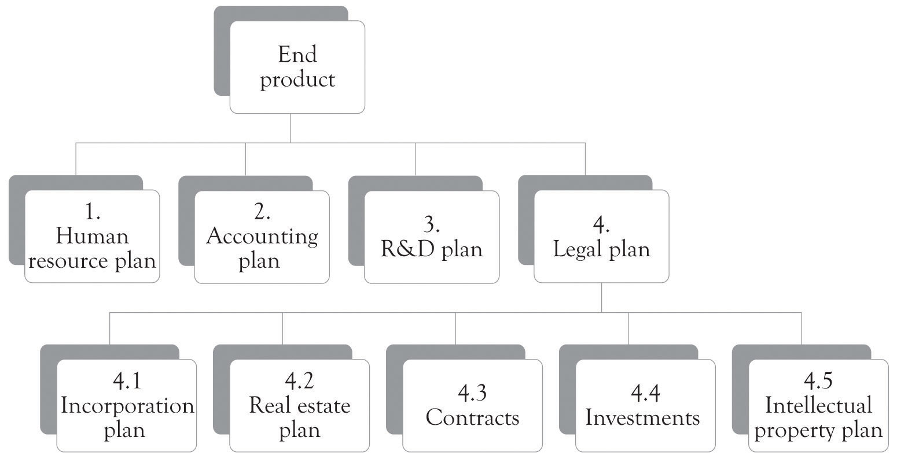

As discussed throughout the book, there is an overarching business life cycle involving several key development points. These points are primarily under the control of the entrepreneur, the founders, or executive management. They are the initial conceptualization of the business through some form of business plan, the development of the initial business processes using some form of project management, the business launch, the addition of additional controls and structure as the business grows, and finally the re-conceptualization of the business as it begins to decline (Figure 13.1 "Key Management Activities During the Business Life Cycle").
Once the business model has been created and the business plan has been developed, the hard work begins. In most situations, everything is new and needs to be built up from scratch. The entire supply chain has to be built and tested to insure that orders for products and services can be accepted, filled, and supported. This is the Building-the-Business phase and it is vital to a successful business launch. As illustrated in Note 13.1 "Key Business Questions Before Launch", several key business questions must be answered before launching the business.
The hard part is to install initial processes or systems to make the business work, and that is where project management is essential. We use the term project management system loosely, since in many instances the system can be self-contained and organized in the mind of the entrepreneur. Nevertheless, the hard part involves building the business to produce the product and deliver the service. This requires project management. Even if you have plans for manufacturing, marketing, and distributing the product, you still need to have a process to accomplish or execute the plan.
Figure 13.1 Key Management Activities During the Business Life Cycle
In many instances, entrepreneurs turn to turnkey systems for accounting and inventory management. Turnkey systemsReady-to-go-software, ready-to-go-processes, or both for running a business. are ready-to-go-software, ready-to-go-processes, or both for running a business. Time and effort is still needed to identify the turnkey solution and then more time and effort is required to actually implement it. Some sort of mechanism is necessary for determining what solution fits the business, how the system will be implemented, who will operate the system, and how it fits in with the other business activities. Even if the so-called turnkey solutions have been identified for accounting and inventory management, additional planning is needed for implementing and creating business processes for installing and running the system.
Project managementThe tool for executing the plan and installing the business processes. is the tool for executing the plan and installing the business processes. It helps to detail what tasks will be accomplished, who will be involved in completing the tasks, and when tasks should start and finish. The minimal tasks that need to be accomplished for a business to start or launch include marketing and sales, production and operations, staffing, and accounting. In addition, some sort of research and development (R&D) process needs to be initiated soon after launch in order to re-prime the pump. These are the first steps in designing organizations for the long term.
Organizational designInvolves the simultaneous integration of the tasks that need to be completed by overlaying some organizational structure that uses a blend of technology and people to fulfill the organizational mission. involves the simultaneous integration of the tasks that need to be completed by overlaying some type of organizational structure that uses a blend of technology and people to fulfill the organizational mission.Adapted from Leavitt (1965). Here are the Building-the-Business functions and critical questions that need to be in place before or soon after launch:
Need a marketing function or system:
Need an operations or production function or system:
Need a human resource function or system:
Need an accounting function or system:
Need an R&D function or system (immediately after launch):
Need legal counsel and assistance:
Even the simplest start-up company has to accomplish the functions described above in some capacity. These systems may be in the mind of the entrepreneur and also executed by the entrepreneur, but they are still necessary for survival. There are other system processes that need to be in place as illustrated in Figure 13.2 "Systems Emerging Over Time". These systems or functions typically emerge and evolve as the business grows and prospers. A good way to consider the complexity of a large business is to think about the components of the supply chain. This is again illustrated in Figure 13.3 "Large Organizations Need Many Systems and Structures" where a number of critical processes need to be in place for a large and growing supply chain. In larger organizations, these activities are part of a more formal approach. The formal approach is project management. If a business only has one employee, the entrepreneur, then all the systems will be conceptualized and executed by the entrepreneur. However, even in a small, one-person operation, understanding and implementing some type of project management is necessary in order to deal with the complexity of the start-up process. Just having a checklist of things to do and things that have been accomplished will help in dealing with the overwhelming complexity of launching a start-up.
Figure 13.2 Systems Emerging Over Time

Figure 13.3 Large Organizations Need Many Systems and Structures

Project management involves time and effort, but it can also be a friend of the start-up. There are two reasons that project management is important. First, project management assists in dealing with complexity and time pressure. Many organizational tasks are difficult, and from the perspective of the entrepreneur, they are close to rocket science because the number of hands for completing tasks are so few. Project management is structured problem solving and it assists with problem decomposition and with managing the risk inherent in product and service development. Even though the focus of this book has been on product differentiation, many products and services also suffer from too much differentiation and feature creep.
Features are critical for maintaining an edge over the competition in the context of monopolistic competition, but there is some point where products need to be delivered and specifications stabilized. Project management is there to assist in converging on a satisfactory solution to problems related to delivering products and services by freezing the specifications. The specs are not frozen for long; perhaps a couple of weeks, a month, or even two, until it is time to renew the innovation process and develop an upgraded product.
Another important feature of project management is that it is very useful in developing and maintaining localized managerial and scientific knowledge related to core competencies and know-how. Project management assists in formalizing the learn-by-doing and learning-about processes into the genetic foundations of the emerging organization.
The Project Management Institute, an organization that sets industry standards in project and portfolio management, conducts research and provides education, certification, and professional exchange opportunities for project managers, defines a project as: “a temporary endeavor taken to create a unique product, service, or result.”Project Management Institute (2004). Temporary means the project has a definite beginning and end. This applies to the project, and not necessarily to the product, service, or result. All the systems that need to be built by the entrepreneur and his or her partners are basically projects.
Typically, projects progress in steps or incremental stages. The goal of a project is to reach a stated objective, and then terminate, passing results to ongoing operations. Initiation of projects is usually due to a market, customer, or organization demand, a technological advance, or a legal requirement. Figure 13.4 "Project Management" presents an overview of the project management process.IPS Associates (1997). It is sometimes referred to as a waterfall process because the process is typically sequential or linear.
Figure 13.4 Project Management
In many instances, project management can be carried out in a linear fashion. Linear projects follow the waterfall approach to project management. That is, the activities for completing the project are sequential and each separate activity follows in a more-or-less precise order. In general, the linear approach is amenable to very straightforward projects. Many of the activities related to setting up accounting systems, human resource systems, and many inventory management systems could be handled using the linear approach to project management.
There are instances where the project to be accomplished cannot be solved using a linear project management approach. Some projects are very complicated, with very loose specifications, and the final outcome in terms of success and features of the product are unpredictable. For example, new product development in the nanotechnology area where there are few products with similar features and the territory is largely uncharted needs a different approach to project management. Many of the emerging software applications involving social networking and game development also need a different approach. Agile project management is suitable in situations where learning-by-doing plays a more dominate role in product development. Discovery is the key as new territory is charted and the solution to the problem unfolds. Scrum development is one example of an iterative and agile approach to project management.Cf. Takeuchi and Nonaka (1986). The key difference from the traditional, waterfall process is that the agile process will be iterative and occur many times.
Regardless of the process, there are several tools that may be used to help manage a project and to communicate to the project team. There are of course sophisticated approaches and tools to managing the process as well as software tools for tracking projects. The simplest of tools includes a diary that can be used to track the amount of time that is spent on project activities. Section 13.8 "Exhibit 1: Project Management Individual Diary" is a sample Project Management Individual Diary for the initiation of a new business, as outlined earlier in the chapter. This diary outlines the tasks or activities needed to complete the project or subproject. Section 13.9 "Exhibit 2: Project Management Summary Diary" presents the Project Management Summary Diary, an aggregation of the individual project tasks used to manage projects.
Another useful tool is the work breakdown structure (WBS)Graphical, hierarchical chart based on the project deliverables, rather than the tasks needed to create those deliverables, and built from the top-down.. The WBS is always based on the project deliverables, rather than the tasks needed to create those deliverables, and is built from the top-down. It is constructed through decomposition. Deliverables are broken down into progressively smaller pieces. The result is a graphical, hierarchical chart, logically organized from top to bottom. Figure 13.5 "Work Breakdown Structure" represents a portion of a simple WBS.
A Gantt chartShows activities represented as horizontal bars and has a calendar along the horizontal axis. The length of the bar corresponds to the length of time the activity should require. is another very useful tool for understanding where a project has been, where it is going, what tasks need to be completed, and the tasks that have already been completed. Bar charts, or Gantt charts, show activities represented as horizontal bars and have a calendar along the horizontal axis. The length of the bar corresponds to the length of time the activity should require. A bar chart can be easily modified to show percentage complete (usually by shading all or part of the horizontal bar). It is considered to be a good tool to use to communicate with management because it is easy to understand at a glance. A typical Gantt chart for a project is illustrated in Figure 13.6 "Gantt Chart".
Figure 13.5 Work Breakdown Structure
Figure 13.6 Gantt Chart

There is extensive literature by academics and practitioners on why businesses and projects fail. There is some agreement that management commitment and participation, along with involvement of employees, are the key success and failure factors, but after that the literature is somewhat confusing and inconclusive.We have been involved in several research papers on the subject including Garrity, Glassberg, Kim, Sanders, and Shin (2005) and Garrity and Sanders (1998). Note 13.7 "Watch Outs During Project Management" presents a few of the areas that can cause problems and perhaps even cause the project to fail. These issues should be treated as watch outs.
Risk is inherent in all businesses and projects. It is virtually impossible to make everything perfect and deliver a perfect product or service. Guy Kawasaki in Reality Check is very aggressive in his view of launching a new product or service.Kawasaki (2008). He states “Don’t worry, be crappy” and thinks that it is acceptable to ship a version of a product with elements of crappiness. He believes that the crappiness can be subsequently fixed in version 2.1 of the product. Kawasaki has a number of very insightful views on the innovation process as illustrated in Note 13.8 "Kawasaki Insights".
“Innovation had better create wealth because it is so damn hard to do.”
There comes a time when a decision has to be made when to launch the business or project. Problems inevitably arise as the launch date approaches and the question whether to continue with the launch date or delay it looms its ugly head. Delaying a launch after the date has been announced can adversely impact the employees of a start-up and create a negative view of the business by consumers and the media. We have developed a very simple set of questions that can be used to ascertain if the launch should go as scheduled.Varianini and Vaturi (2000). The questions are outlined in Figure 13.7 "To Launch or Not to Launch: These Are the Questions".
Figure 13.7 To Launch or Not to Launch: These Are the Questions

There is no simple answer regarding the decision to launch, even in the face of numerous deficiencies and potential problems. Sometimes it only takes a negative answer to only one question and the launch should be delayed. If a new online banking service is being launched, then any hint of problems should preclude launching. In some instances, there can be numerous problems with a product and downloading software patches can alleviate them. Online gaming developers are notorious for launching software with numerous bugs. It is a very contextual decision and dependent on the product features and what the product will be used for.
Growing pains are an inevitable part of life for the start-up and they begin to emerge soon after launch (see Figure 13.1 "Key Management Activities During the Business Life Cycle"). They are impossible to avoid because the world is not stagnant. The entrepreneur may not be looking for stability and consistency in the face of market dynamics and change, but the organization and the employees are looking for stability and consistency. Organizations and organizational members seek control in the form of standardized, coordinated business processes and systems; they want well-defined, enriched, and specialized jobs; and they also want salaries and benefits with the potential to grow. Small companies with astute founders can manage and perhaps even perform these tasks admirably. As the business grows, there may be a need to hire professional managers with the knowledge and skills to implement better practices.
Growing up does not mean that the founder should be ostracized or relegated to honorary duties. This may in fact put the organization at risk. The founder may have a certain entrepreneurial mojo that cannot be replaced. Steve Jobs had an almost magical power to guide Apple in the right direction. The company certainly performed better under his leadership than when he was away. Identifying professional managers is itself a project, requiring project management. Deciding on how to manage and guide the growth of the business is a key decision for survival.
Growing up also means that there are more groups that are trying to protect their own turf with somewhat unique objectives. This includes operations, managerial accounting, marketing, human resources, and product design groups. The six hats approach discussed in a previous chapter can help to reconcile conflicts during meetings, but a new organizational process for product development may be necessary in order to reconcile the inevitable differences that will occur when the functional silos begin to emerge. Concurrent engineering may be a solution for organizations as they become larger and more complex.
Concurrent engineeringThe simultaneous design and development of a product and the manufacturing process for building a product. is the simultaneous design and development of a product and the manufacturing process for building a product.Anderson (2010). An important part of concurrent engineering is the use of multifunctional teams. Concurrent engineering design teams are typically very comprehensive. They could include customers, suppliers, workers, dealers, regulators, design and manufacturing engineers, purchasing, materials managers, marketing managers, customer support, and financial and accounting representatives, among others. The objective of assembling such teams is to instill the diversity of opinion into the design and manufacturing process. Using such teams also forges trust among the parties and can also help to develop organizational knowledge that can be used to reduce development times for new products.
In this chapter, we have illustrated that the business cycle for a new venture involves several development points, mostly under control of the entrepreneur. The key takeaways include the following:
Project management is not a panacea, but rather a critical tool in the never-ending process of growth and renewal of the business. It allows the entrepreneur to minimize and mitigate inherent risks and increase the potential for success of the launch and the ongoing operations.
(This is used by an individual to track how much time is spent on project activities.)
| Group Number and Group Name | Project Description | Individual(s) Preparing | Review Date |
| Legal Team | Project Firestorm | Norma Gleeson | 4/1/11 |
| Task or subtask | Date | Hours worked | What’s going well? What’s not going well? Additional resources (people, technology) required? Are users and management participating? |
|---|---|---|---|
| Needs assessment conducted | 2/12/11 | 8 | Cross-functional team, including management. Requirements have been documented and agreed upon. |
| Name search conducted, name approved | 2/14/11 | 4 | No issues. |
| Real estate search conducted | 2/19/11 | 40 | Various properties researched and visited. |
| Rental contract signed | 2/21/11 | 4 | Ahead of plan. |
| Incorporation paperwork completed and filed | 2/21/11 | 40 | No issues. |
| Incorporation status completed. | 3/3/11 | 16 | On target with plan. |
| Investors contacted for funding opportunities | 3/31/11 | 36 | In process. |
(This diary is an aggregation of the individual project diaries.)
| Group Number and Group Name | Project Description | Individual(s) Preparing | Preparation Date | Review Date |
| PMO | Project Firestorm | James Xu | 2/11/11 | 4/1/11 |
| Task or subtask | Assigned to | Date | Hours scheduled | Hours accumulated | Precent completed | What’s going well? What’s not going well? Additional resources (people, technology) required? Are users and management participating? |
|---|---|---|---|---|---|---|
| Requirements gathered | James Xu | 2/16/11 | 40 | 32 | 100 | |
| Team development and project planning | James Xu | 2/16/11 | 8 | 8 | 100 | |
| Legal plans | Norma Gleeson | 3/3/11 | 240 | 240 | 100 | |
| R&D plans | Garry Hall | 3/10/11 | 480 | 540 | 100 | Over budget due to expanded scope. |
| Accounting plans | Michel Bulan | 3/24/11 | 240 | 240 | 100 | On budget and on plan. |
| HR plans | Davis Wilson | 3/31/11 | 440 | 420 | 100 | Completed under budget and ahead of plan. |
| Funding and investments | Norma Gleeson | 5/5/11 | 480 | 240 | 50 | |
| Employee recruitment | Davis Wilson | 6/23/11 | 480 | 0 | 0 | |
| Employee contracts | Davis Wilson | 7/7/11 | 80 | 0 | 0 | |
| Development | Garry Hall | 11/10/11 | 960 | 0 | 0 | |
| IP (patents) | Norma Gleeson | 11/10/11 | 730 | 0 | 0 |